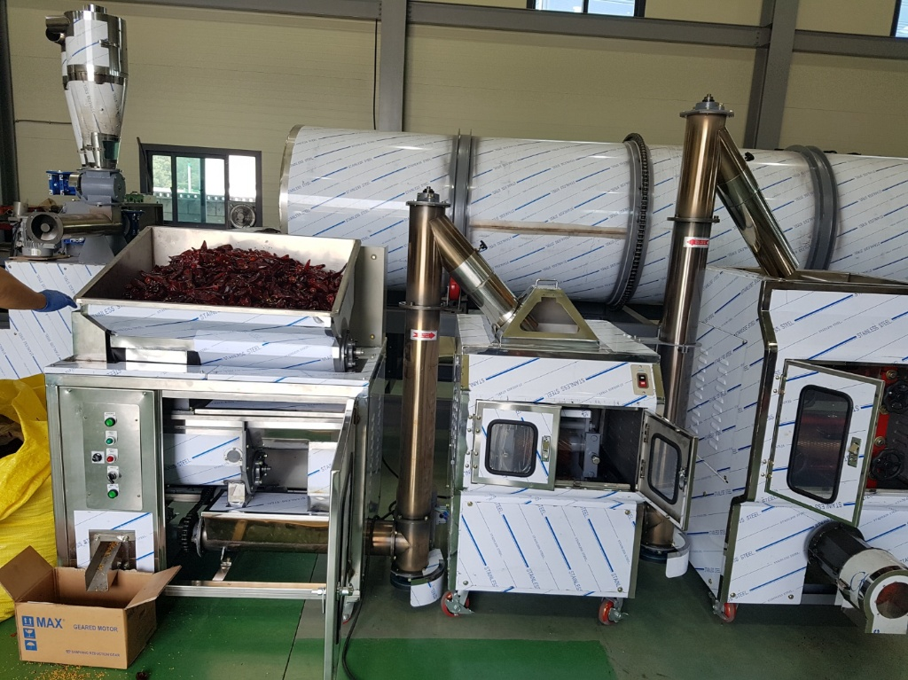
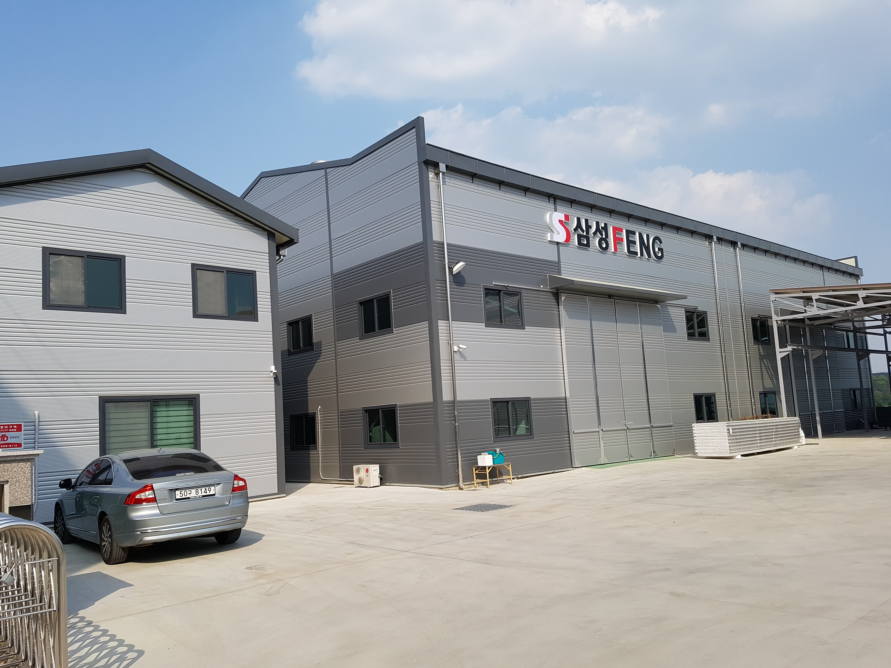
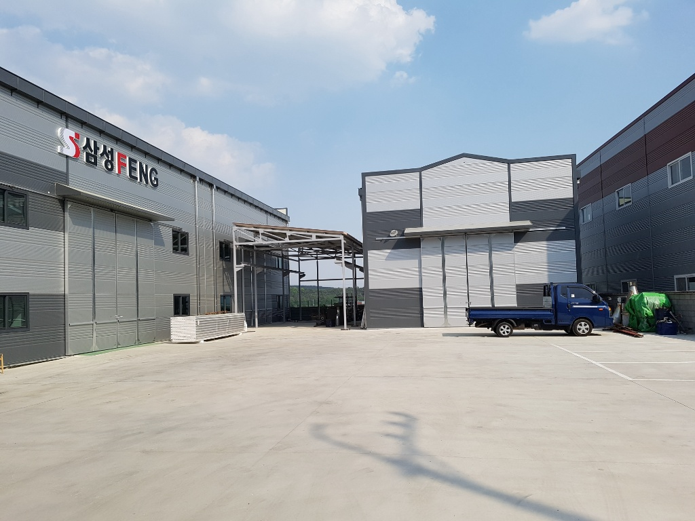
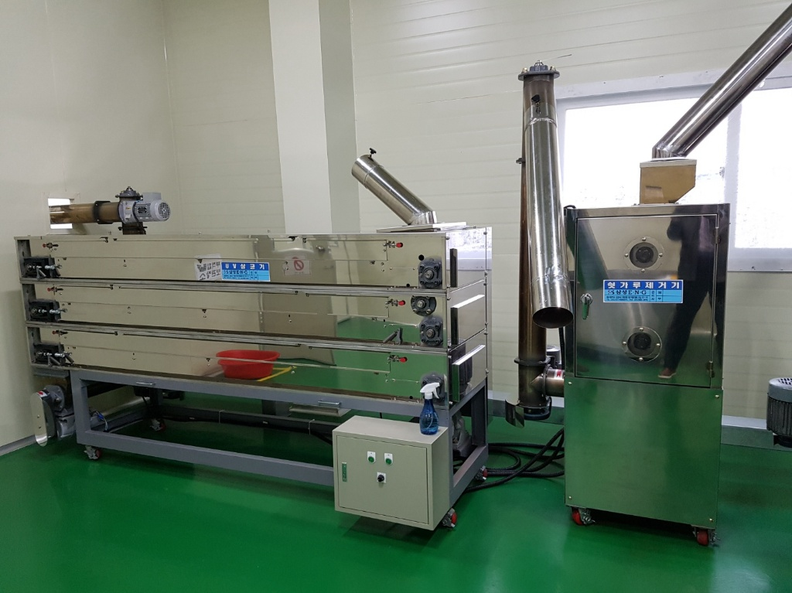
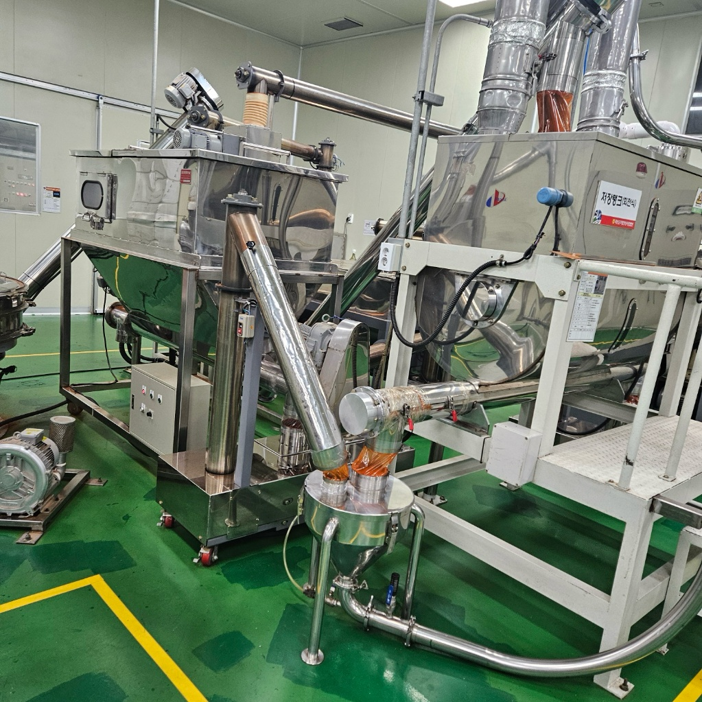
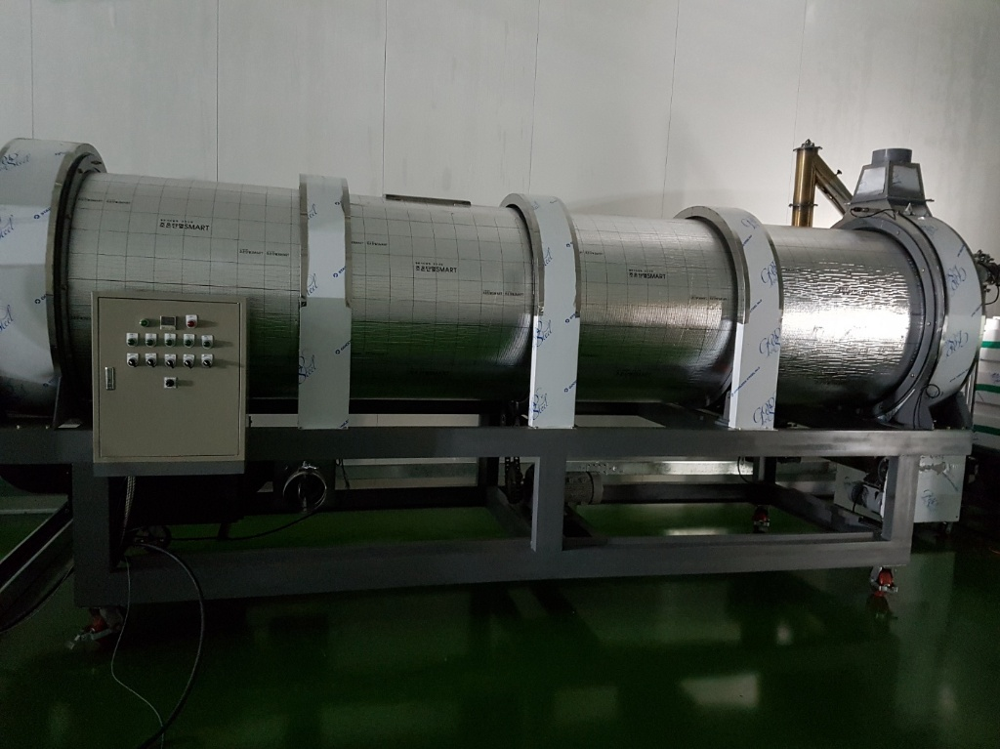
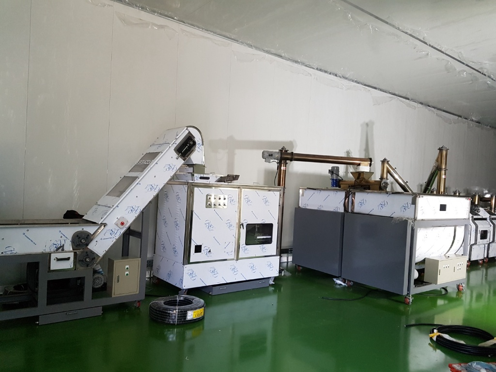
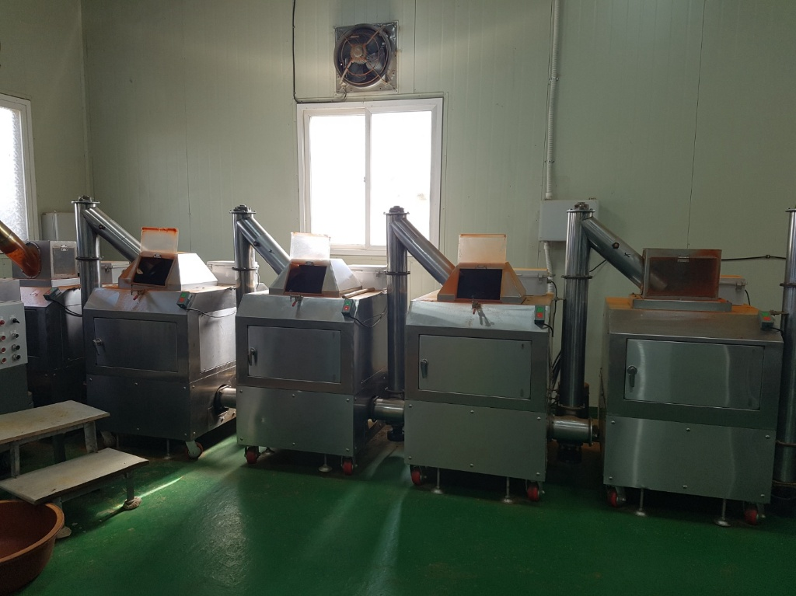
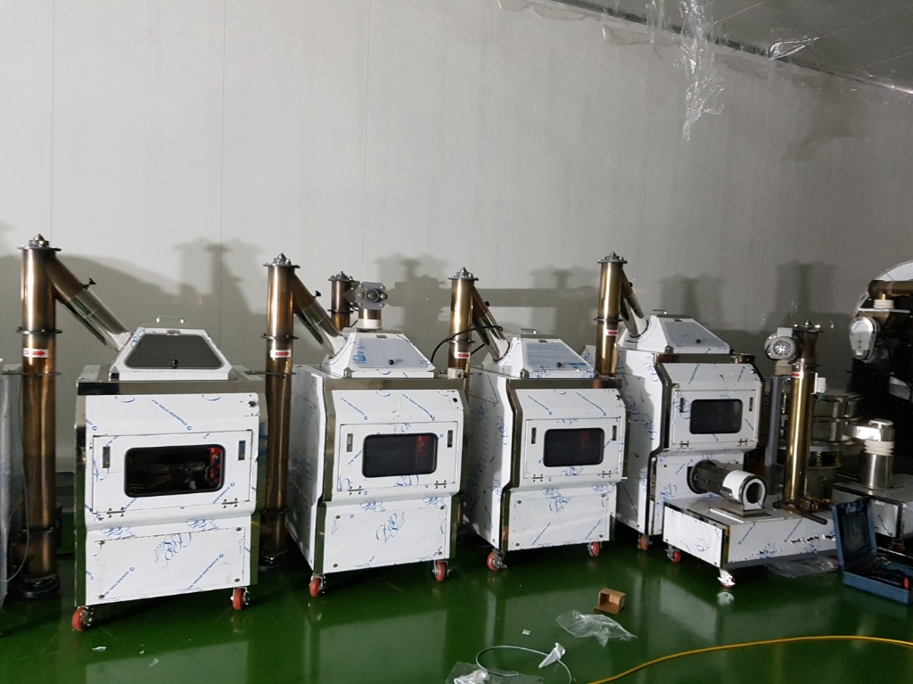

특화분야
03
고추방앗간기계
분쇄, 건조, 선별 등 고추 가공의 모든 공정을 지원합니다. 삼성FENG의 핵심 기술력이 집약된 특화 분야로, 9건의 특허 기술을 바탕으로 최고 품질의 고춧가루 생산을 실현합니다.
보유 특허 보기 →종합식품기계 전문업체로서 HACCP라인, 고추방앗간기계,
산업기계, 플랜트까지 설계부터 설치까지 원스톱 제공


삼성FENG은 종합식품기계 전문업체로서, 고춧가루가공기계를 특화하여 고객 맞춤형 솔루션을 제공합니다.
최첨단 설비와 축적된 기술력을 바탕으로 식품기계, HACCP라인, 고추방앗간기계, 산업기계, 플랜트 등 다양한 분야에서 최고 품질의 제품을 설계하고 제작합니다.
9건의 특허를 보유한 기술력과 끊임없는 연구개발로 대한민국 식품기계 산업의 새로운 기준을 만들어 갑니다.
설계부터 제작, 설치까지 원스톱 서비스를 제공합니다

특화분야분쇄, 건조, 선별 등 고추 가공의 모든 공정을 지원합니다. 삼성FENG의 핵심 기술력이 집약된 특화 분야로, 9건의 특허 기술을 바탕으로 최고 품질의 고춧가루 생산을 실현합니다.
보유 특허 보기 →
식품 가공에 필요한 전반적인 기계 장비를 설계하고 제작합니다.

HACCP 기준에 부합하는 위생적인 식품 가공 라인을 구축합니다.

다양한 산업 현장에 맞춤형 기계 장비를 제작합니다.

식품 가공 공장 전체 플랜트를 설계하고 시공합니다.
삼성FENG의 분쇄기계는 고춧가루 가공 과정에서 발생하는 이물질을 정밀하게 걸러내어 최고 품질의 고춧가루를 생산합니다.
삼성FENG의 다양한 식품기계 제품을 만나보세요


끊임없는 연구개발로 획득한 9건의 특허 기술